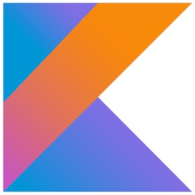
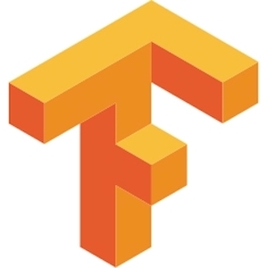
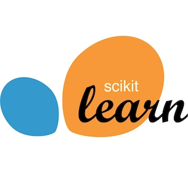
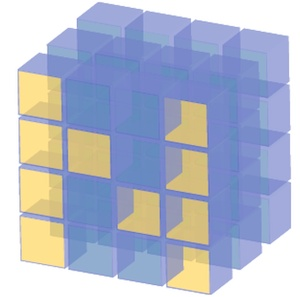

At HopHacks 2018, we created a robotic pill dispenser to simplify the daily routine of taking different medicines. We created a physical device using servo motors to dispense medicine, a React.js-based web frontend for physicians to monitor patient statuses, and an iOS mobile client for patients to easily dispense their medicine in the morning.
Hi, I'm Kevin.
I'm a developer and an undergrad studying Computer Science, interested in machine learning and its applications to bioinformatics, finance, and other fields.
I love technology and learning new things. Currently, I'm exploring software engineering and data science. For the past few years, I've been working with Curoverse Research to help us better understand the human genome.
In the summer of 2019, I worked at Intralinks as an intern on the innovation team, building natural language processing pipelines to help streamline customer acquisition.
I was a software engineering intern at Google during the summer of 2020. There, I worked on the Google Business Messages team, creating tools for company partners to integrate natural language processing into support chatbots.
I was a software engineering intern at Meta on the Instagram Ads Ranking and Delivery team. There, I worked on improving algorithms used for ranking various ads across Stories and Reels based on user interaction.
I love technology and learning new things. Currently, I'm exploring software engineering and data science. For the past few years, I've been working with Curoverse Research to help us better understand the human genome.
In the summer of 2019, I worked at Intralinks as an intern on the innovation team, building natural language processing pipelines to help streamline customer acquisition.
I was a software engineering intern at Google during the summer of 2020. There, I worked on the Google Business Messages team, creating tools for company partners to integrate natural language processing into support chatbots.
I was a software engineering intern at Meta on the Instagram Ads Ranking and Delivery team. There, I worked on improving algorithms used for ranking various ads across Stories and Reels based on user interaction.
About Me
I'm currently a senior at Duke University majoring in Computer Science with a minor in Linguistics. I am passionate about exploring new technologies and learning to best use them to build innovative projects.
I transferred to Duke as a rising sophomore in CS. Before Duke, I was a student at the New York University Tandon School of Engineering, and before that, I was a student at Commonwealth High School, where I gained a deeper appreciation for the non-STEM fields. I learned about writing with clarity and precision, which is now probably one of the most important skills I know.
When I'm not working on my own projects, you'll probably find me at a hackathon, at the gym, making coffee, or practicing piano.
I transferred to Duke as a rising sophomore in CS. Before Duke, I was a student at the New York University Tandon School of Engineering, and before that, I was a student at Commonwealth High School, where I gained a deeper appreciation for the non-STEM fields. I learned about writing with clarity and precision, which is now probably one of the most important skills I know.
When I'm not working on my own projects, you'll probably find me at a hackathon, at the gym, making coffee, or practicing piano.
Experience
June 2021 - Aug 2021 | New York, NY (remote)
Software Engineering Intern @ Instagram (Facebook)> Instagram Ads Ranking & Delivery team> Improved ML-based ad-ranking algorithms to include different factors in ad design as well as user preferences> Designed & implemented end-to-end platform for ranking engineers to understand impact of different ad features> Created experiments on different segments of users to determine effectiveness of performance optimizations> Built recurring data pipelines to query petabyte-scale tables for extracting ads performance signals
Software Engineering Intern @ Instagram (Facebook)> Instagram Ads Ranking & Delivery team> Improved ML-based ad-ranking algorithms to include different factors in ad design as well as user preferences> Designed & implemented end-to-end platform for ranking engineers to understand impact of different ad features> Created experiments on different segments of users to determine effectiveness of performance optimizations> Built recurring data pipelines to query petabyte-scale tables for extracting ads performance signals
May 2020 - Aug 2020 | Mountain View, CA (remote)
Software Engineering Intern @ Google> Business Messages — G Suite, Google Cloud Communication Apps> Developed tools for integrating natural language processing features into chat-bots within Google Maps + Search> Built server to handle incoming requests from the Business Messages API and direct messages appropriately> Integrated database to track user state of up to hundreds of thousands of simultaneous conversations (Firebase)> Built EJS + Bootstrap console for company partners to manage agents and directly message users> Created setup script for account creation, database + server initialization, and deployment to Google App Engine
Software Engineering Intern @ Google> Business Messages — G Suite, Google Cloud Communication Apps> Developed tools for integrating natural language processing features into chat-bots within Google Maps + Search> Built server to handle incoming requests from the Business Messages API and direct messages appropriately> Integrated database to track user state of up to hundreds of thousands of simultaneous conversations (Firebase)> Built EJS + Bootstrap console for company partners to manage agents and directly message users> Created setup script for account creation, database + server initialization, and deployment to Google App Engine
May 2020 - present | Durham, NC
Social Chair @ Duke Catalyst Tech Society> Plan and host social events for members throughout the summer and school year
Social Chair @ Duke Catalyst Tech Society> Plan and host social events for members throughout the summer and school year
January 2020 - May 2020 | Durham, NC
Professional Chair @ Duke Catalyst Tech Society> Maintained and built relationships with companies for recruiting> Mentored students in preparation for the internship and full-time technical recuiting processes> Held professional development events for students, including technical interview and resume review workshops
Professional Chair @ Duke Catalyst Tech Society> Maintained and built relationships with companies for recruiting> Mentored students in preparation for the internship and full-time technical recuiting processes> Held professional development events for students, including technical interview and resume review workshops
September 2019 - December 2019 | Somerville, MA
Associate Director of Sponsorship @ Duke Machine Learning> Planned Duke Datathon, a data science competition where 300+ attendees analyze and present about a dataset> Acted as a judge for Datathon, assessing submissions for methodology, relevance, and coherence> Maintained and built relationships with companies and university departments for sponsorships and talks
Associate Director of Sponsorship @ Duke Machine Learning> Planned Duke Datathon, a data science competition where 300+ attendees analyze and present about a dataset> Acted as a judge for Datathon, assessing submissions for methodology, relevance, and coherence> Maintained and built relationships with companies and university departments for sponsorships and talks
May 2019 - August 2019 | Somerville, MA
Data Science Intern @ Intralinks> Performed web scraping and exploratory data analysis on M&A data to direct model selection (scraPy)> Classified articles by topic with 90% accuracy using Logistic Regression models (scikit-learn)> Clustered articles with K-Means Clustering to derive meaning from news articles after optimizing dimensionality with principal component analysis> Predicted M&A deals with a machine learning pipeline consisting of supervised and unsupervised learning, including NLP techniques such as sentiment analysis and named entity recognition using BERT models
Data Science Intern @ Intralinks> Performed web scraping and exploratory data analysis on M&A data to direct model selection (scraPy)> Classified articles by topic with 90% accuracy using Logistic Regression models (scikit-learn)> Clustered articles with K-Means Clustering to derive meaning from news articles after optimizing dimensionality with principal component analysis> Predicted M&A deals with a machine learning pipeline consisting of supervised and unsupervised learning, including NLP techniques such as sentiment analysis and named entity recognition using BERT models
June 2016 - January 2019 | Somerville, MA
Data Science Intern @ Curoverse Research> Developed reverse gene + rsid searching tool for open-source genome compression software (tiling)> Created machine learning classifiers to predict eye color and blood type to 95% accuracy using scikit-learn and TensorFlow> Developed prediction pipelines in Arvados, an open-source bioinformatics platform, using Java and Common Workflow Language (CWL)> Presented poster on open science and phenotypic analysis at the i2b2/tranSMART symposium to 100+ attendees at Harvard Medical School
Data Science Intern @ Curoverse Research> Developed reverse gene + rsid searching tool for open-source genome compression software (tiling)> Created machine learning classifiers to predict eye color and blood type to 95% accuracy using scikit-learn and TensorFlow> Developed prediction pipelines in Arvados, an open-source bioinformatics platform, using Java and Common Workflow Language (CWL)> Presented poster on open science and phenotypic analysis at the i2b2/tranSMART symposium to 100+ attendees at Harvard Medical School
March 2018 | Cambridge, MA
Biomechatronics Intern @ MIT Media Lab> Developed high throughput compute cluster with workload distribution software HTCondor for iterative finite element modeling of prosthetic limb designs> Increased speed and efficiency of computation by over 60% using containerized solutions in Docker and Ubuntu Linux> Wrote Python scripts to handle submission of processing jobs across compute cluster> Parallelized HTCondor workflow across set of old workstations to re-purpose retired machines for math computation
Biomechatronics Intern @ MIT Media Lab> Developed high throughput compute cluster with workload distribution software HTCondor for iterative finite element modeling of prosthetic limb designs> Increased speed and efficiency of computation by over 60% using containerized solutions in Docker and Ubuntu Linux> Wrote Python scripts to handle submission of processing jobs across compute cluster> Parallelized HTCondor workflow across set of old workstations to re-purpose retired machines for math computation
Selected Projects
PillUp [HopHacks 2018 - 1st Place Winner]
Reinforced Flappy Bird
For my final, independent CS project in high school, I used policy gradients to train a neural net to play Flappy Bird. The neural net read the state of a Flappy Bird game and would predict the optimal move (jump or fall). Based on results of the previous games, it would learn to make better predictions over time. After a few hundred iterations of training, the AI was able to play Flappy Bird without failing.
DearAI [PennApps XIX - Top 5, Best Entertainment Hack]
Since many teenagers do not actively seek out support for potential mental health issues (either due to financial or personal reasons), we built an app that integrates daily journaling with sentiment analysis software, to inform teens about their emotions using machine learning and IBM Watson's Tone Analyzer API. Based on the resultant data, we recommend to them activities designed to improve their well-being.
On the Efficacy of Renewable Portfolio Standards
For the 2019 Citadel Data Open at Princeton, our team worked on analyzing the efficacy of renewable portfolio standards using the SEDS dataset from the U.S. Energy Information Administration. We then modeled how it affected emissions data and electricity revenue data with a difference-in-differences econometrics model.
simplif.ai [YHack 2018]
To make research and legal writing more accessible, at YHack 2018 we created an application that would serve as an AI 'companion' for writers, providing feedback as to whether sentences would be overly complicated or difficult to understand. We trained three different classifiers: a custom recurrent neural net, a Google Cloud AutoML natural language classifier, and a Markov Chain using Wolfram Classify, and achieved over 80% accuracy.
Relief Mesh [HackHarvard - Best Hack For Building Communities]
After seeing the damage caused by hurricane Florence, we were inspired to create a system for communication that did not depend on developed cellular networks. Using long-range 'LoRA' radios, short-range transceivers, a Raspberry Pi Zero, and GPS modules, we created a decentralized mesh network that allows users to communicate with each other over 1 mi+ ranges without the use of internet.
Climate Sentiment
I created a tool that scraped several news sites, including CNN, Fox News, the Economist, and Reuters. Once it saved the sentences, I ran them through the Google Cloud Platform NLP toolkit for sentiment analysis. Then, I took the sentiments and graphed them in Tableau, to see if I could find any overall trends. To no one's surprise, there was a mild negative trend that appeared among the news sites, showing that over time, climate change writing gets more and more negative.
FenceMe Fencing Scorekeeper
I was looking for easier ways for referees to score fencing matches, but I found that many of the existing apps on the Google Play Store were quite outdated or unpleasant to use. So I created my own app called FenceMe Fencing Scorekeeper. I built it using Java, Kotlin, and RxJava, and it included features such as timing, keeping track of points, penalties, and tiebreakers.
Technical Skills
Languages


Libraries



Web
Miscellaneous
Want to get in touch?
Feel free to email me at kevinzfang@gmail.com!